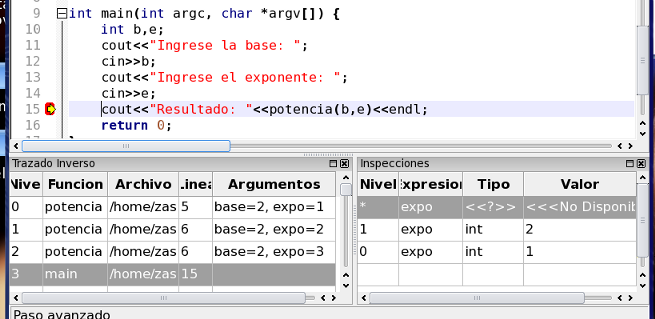

En ZinjaI existe una segunda forma de ver las inspecciones (muchos depuradores solo cuentan con esta segunda forma), en la cual las inspecciones no tienen un ámbito asociado, sino que se evalúan en el ámbito seleccionado, y al cambiar la selección, cambian su valor. Para estas expresiones, la columna Nivel contiene un asterisco (*). Para convertir una expresión de un tipo en otra (es decir, asociar o desasociar con un ámbito), puede hacer doble click en la columna Nivel.
Pruebe convertir una de las expresiones, y seleccionar diferentes funciones en el trazado inverso (incluyendo main, donde la variable no existe).

Volver... Continuar...